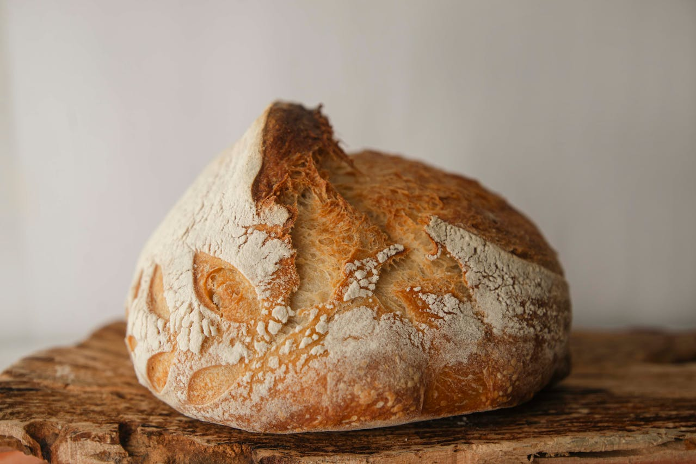
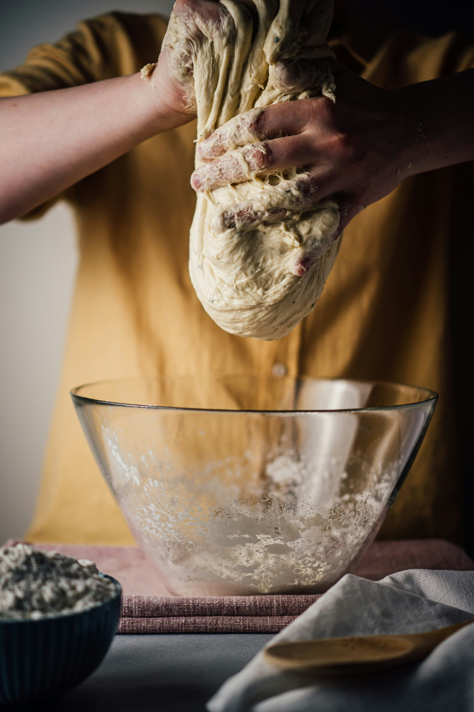
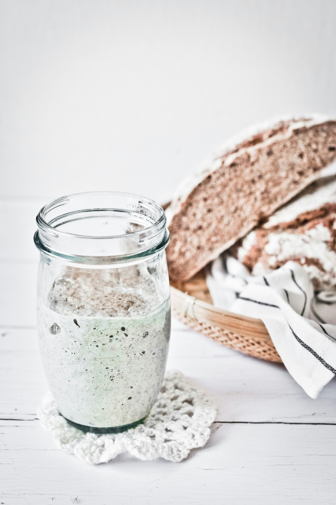

Welcome to Bailey's Bakery!
This is an introductory guide to sourdough bread baking, including tips and tricks and my go-to recipe!

Get StartedCustomize Your Sourdough
I like to mix up my loaves with different flavors and inclusions. My current favorites are cinnamon raisin, lemon blueberry, and chocolate chip! Add anything you like in the shape and proof stage.

Timeline
Sourdough can be completed in one day (depending on when you start) or within 2-3 days.
Be Creative!
If you’re not interested in making a sourdough loaf, don’t worry! There are plenty of other goodies you can make with sourdough, including buns, croissants, bagels, and focaccia!
Tips and Tricks
The process of actually making sourdough can seem a bit daunting, but I've learned a few things over the years. Here are a few of my most helpful tips! If you're nervous about overproofing or underproofing your dough, just take a pinch off and put it in a smaller jar, marking where the top of the dough reaches. Once it has about doubled in size, your dough is ready to be scored and baked! If you're struggling to get your dough and your starter to rise, try keeping it in a warm space or in the oven or microwave. Dough rises best around 75ºF. If your dough is too sticky to handle, try wetting your hands before shaping and use a minimal amount of flour.

My Sourdough Kit
If you are new to sourdough and don’t have all the right tools, my kit includes everything you will need from starter to dutch oven! Visit my shop for more details.

Starter
Having a strong, active starter is crucial to starting the baking process. When beginning a new starter, it typically takes 10-14 days to be ready for the baking process when feeding daily. Watch for bubbles and a consistent rise 4-6 hours within feeding.

Heard Enough?
Explore more or take the next step in your sourdough journey by clicking below!
Learn More About Sourdough